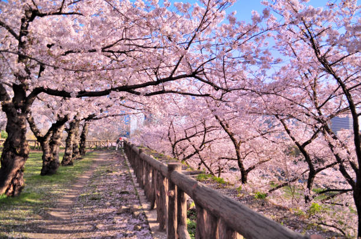
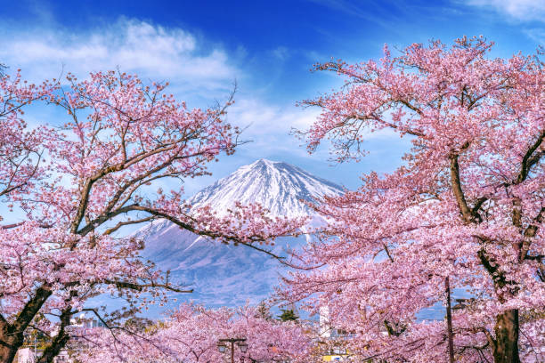

Japan
National Flower — Cherry Blossom (Sakura)
Every spring, Japan transforms into a sea of soft pink and white as cherry blossom trees bloom across the country. Known as sakura in Japanese, the cherry blossom is more than just a beautiful flower — it is a profound symbol of Japanese culture, philosophy, and identity.


Sakura and Japanese Culture
The cherry blossom has been celebrated in Japan for over a thousand years. Each spring, people gather under blooming sakura trees for hanami — a centuries-old tradition of flower viewing that brings families, friends, and communities together. The blooming season lasts only one to two weeks, which is part of what makes it so precious. In Japanese philosophy, this fleeting beauty is connected to the concept of mono no aware — a bittersweet appreciation for the passing of time. The sakura reminds people to be present, to cherish what is beautiful, and to accept that all things are temporary.
Why Cherry Blossom is Japan's National Flower
Japan has two unofficial national flowers — the cherry blossom and the chrysanthemum. The sakura represents the Japanese people's spirit: delicate yet resilient, beautiful yet humble. It appears on Japanese yen coins, school emblems, and government logos. For the Japanese, the cherry blossom season marks the start of the new year in schools and businesses, making it a symbol of new beginnings, hope, and the beauty of life itself.
Quick Facts
| Feature | Details |
|---|---|
| Scientific Name | Prunus serrulata |
| Common Colors | Pink, white, pale yellow |
| Blooming Season | Spring (March – May) |
| Symbol of | Beauty, impermanence, new beginnings |
| Cultural Tradition | Hanami (flower viewing) |
How to Care for a Cherry Blossom Tree
- Plant in well-drained soil with full sun exposure — at least 6 hours of sunlight daily
- Water deeply but infrequently, allowing the soil to dry slightly between waterings
- Fertilize once in early spring before blooming begins
- Prune lightly after flowering to maintain shape — avoid heavy pruning
- Watch for pests like aphids and treat early with neem oil if needed
- Mulch around the base to retain moisture and protect the roots in winter
Watch the Cherry Blossom Bloom
See the magic of sakura opening in real time in this stunning 4K time-lapse:
▶ Watch: Cherry Blossom 4K Timelapse — Temponaut Timelapse